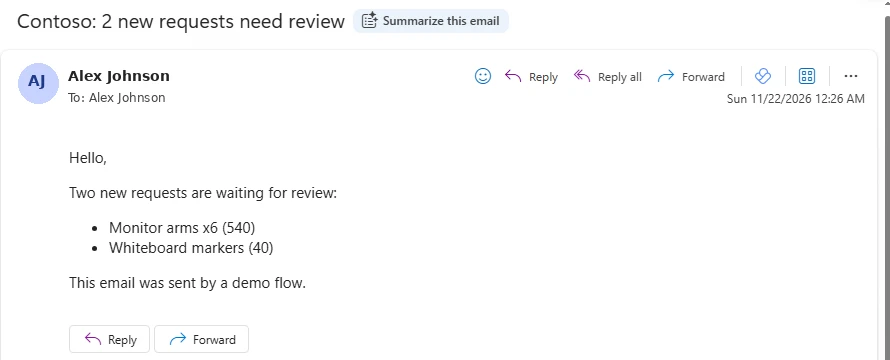

- Power Automate
- Level 3 · Triggers and connectors · 4 of 7
Outlook and Teams notifications
Most flows end by telling someone something. The two everyday channels are an email through Office 365 Outlook and a message through Microsoft Teams. Both took one action each in this demo.
The demo flow

The email

Send an email (V2) needs To, Subject and Body. The Body box accepts HTML, so lists, bold text and tables (from Create HTML table in Level 2) all work.
- The email comes from the connection's account. To send from a team address, use Send an email from a shared mailbox and get the mailbox permission first.
- Use a semicolon between several addresses:
alex@contoso.com;sam@contoso.com.
The Teams message

| Post as | Post in | Use when |
|---|---|---|
| Flow bot | Chat with Flow bot | A private notification to one person |
| Flow bot | Channel | A team update everyone in the channel should see |
| User | Group chat or channel | The message should look like it came from a person (the connection owner) |
Tip: keep messages short and link to the detail. A Teams message has a size limit of about 28 KB including HTML, and long messages are hard to read on a phone.
New to this? Start from the basics optional
Connection owner: the account a connection signs in as. Emails and "post as user" messages appear to come from that account.
Flow bot: the Workflows app in Teams. Messages from it don't come from a person.
HTML body: email and Teams bodies understand basic HTML tags such as <p>, <b>, <ul> and <table>.
Build it step by step optional
- Create an instant flow and add Send an email (V2). To: your own address. Subject and an HTML body with a short list.
- Add Post message in a chat or channel (Microsoft Teams). Post as: Flow bot. Post in: Chat with Flow bot. Recipient: your address.
- Write a one-line message with
<b>for the key words. - Test. Check your inbox and the Workflows chat in Teams.
- Change Post in to a channel you own and test again to see the difference.
Common mistakes
- Testing with real recipients. Send to yourself until the content is right, or store the recipient in an environment variable that differs per environment.
- Sending one email per item inside a loop. Build one summary (Select + Create HTML table) and send once.
- Posting to a private channel. That isn't supported by these actions.